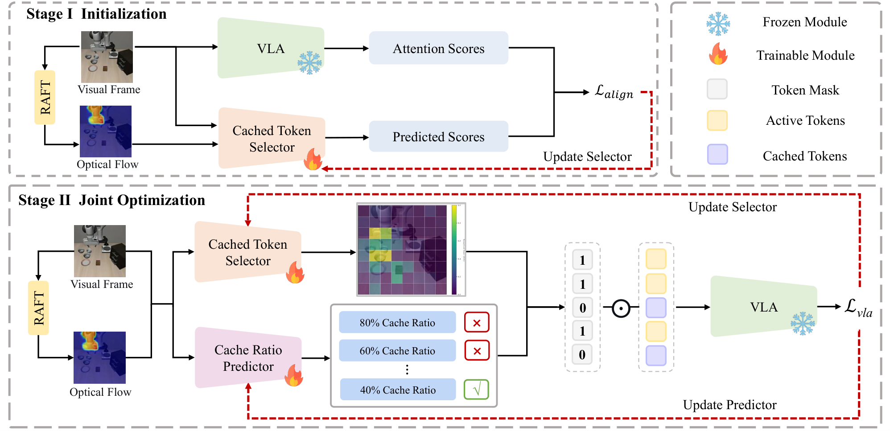
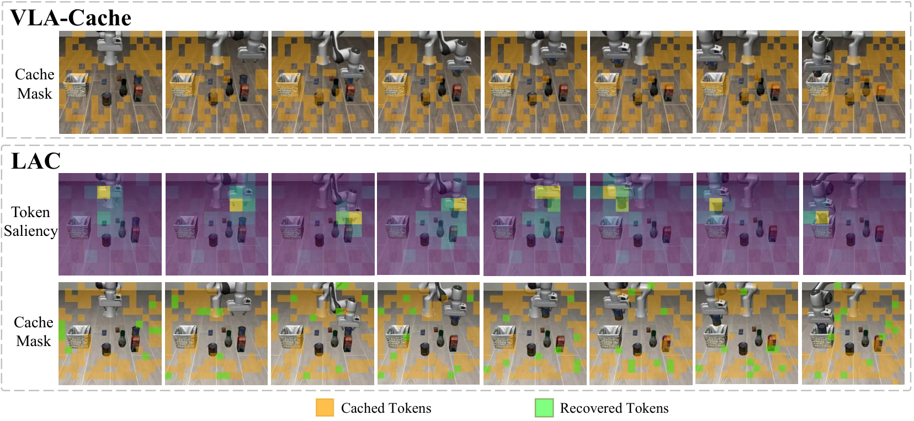

能拿到的是：跨帧 KV 复用的选择器不再靠阈值——一个小 CNN 在任务损失下学习哪些 token 值得重算，顺带把成功率拉高了（75.0%→76.9%）。代价是要对动作损失反传、有 attention map 做热启动、每帧多一次光流前向。
- 最小可复用件
- 逐 token saliency CNN + 场景级预算分类器这一对模块，以及插进 decoder 的三条改造（保留位置编码 / rotary 只作用于重算 token / 逐层 KV 局部更新）。
- 主要风险
- Stage I 依赖 attention map 监督；光流在高速自运动、模糊、低纹理下退化；两阶段训练把「免训练加速器」变成「需要训练的新组件」。
- 复现门槛
- 要能跑 task-loss 微调、一小段 in-domain rollout 数据、RAFT-small 权重；\(\lambda\)、\(\tau\) 等超参论文未给出，得自己扫。
1 核心摘要
要解决的浪费很固定：VLA 每帧把整幅图像重新编码一遍，而相邻帧大部分像素没动。已有做法（剪枝、合并、跨帧 KV 缓存）都用手工规则决定省哪些 token，论文的判断是这类规则与任务目标脱钩——注意力高的地方不一定对当前动作有用，注意力低但静止的目标物却可能在两步之后成为交互对象。
LAC 把它写成策略学习。两个模块吃同一个运动感知输入 \(V_{t} = [I_{t};\, O_{t}]\)（\(I_{t}\) 当前帧，\(O_{t}\) 为 RAFT-small 从相邻两帧估出的光流）：
- Cached Token Selector：小 CNN，输出与视觉 token 网格对齐的逐 token saliency \(S_{t} \in [0,1]^{N}\)，高分重算、低分从缓存取。
- Cache Ratio Predictor：输出离散比例集合 \(R\) 上的 logits，选整体预算 \(r_{t}\)，selector 按分数取最低的 \(k_{t} = N \cdot r_{t}\) 个 token 缓存。
训练两阶段。Stage I 让 selector 用 MSE 拟合冻结 VLA 的 attention map 做热启动；Stage II 冻结 VLA、只训这两个模块，\(L_{\text{total}} = L_{\text{VLA}} + \lambda L_{\text{ratio}}\)，\(L_{\text{ratio}}\) 奖励更高的缓存比例。两处离散决策（\(\operatorname{argmax}\) 选比例、top-\(k\) 选 token）用 Gumbel-Softmax + straight-through 做「前向硬、反向软」。推理期决策全确定性，另加随机恢复：以 \(p_{\text{recover}}\) 把一部分已缓存 token 强制重算。
判定：「第一个可学习的自适应缓存框架」这个定位站得住。收益不只是速度——OpenVLA / LIBERO 上 75.0%→76.9%、1.76× 加速（51.91→29.51 ms）、FLOPs −25.3%。换来的是「必须训练」，且仍是相邻控制步之间的短时 KV 复用，不做跨 episode 记忆。
2 复用机制定位
主命中「复用候选」与「失效判定」：两个环节合并成同一个学习问题——selector 决定谁进缓存、谁失效重算，predictor 决定整体预算，两者都由 \(\nabla L_{\text{VLA}}\) 塑形。部分命中「层与预算」：预算自适应，但层这一维没有策略，每层 KV 各按同一个 mask 局部更新。部分命中「动作接口」：对 action head 无关（自回归 OpenVLA 与 diffusion head 的 CogAct 都跑通），收益集中在每步首个 action token 的 prefill。
| 维度 | LAC | VLA-Cache（差异） |
|---|---|---|
| 判定信号 | 学习的逐 token saliency（CNN，输入 \([I_{t};O_{t}]\)）+ 学习的场景级比例 logits；梯度来自 \(L_{\text{VLA}}\)，Stage I 用 attention map 热启动 | 像素余弦相似度 → text-to-vision 注意力剔除 → 层熵分配复用率，三段固定规则 |
| 复用单位 | 视觉 token 级二值 mask，同一个 mask 施加到所有 decoder 层 | token 级，但每层复用率不同 \(\alpha^{l}\) |
| 失效与重算 | 逐 token 局部失效，没有整帧失效的全局事件；靠随机恢复（\(p_{\text{recover}}\)）防误差累积；动态场景由预测器调低预算 | 无事件边界，复用率与当前帧运动强度无关 |
| 在线开销 | 每步一次 RAFT-small + 两次小 CNN 前向，与层数无关；离线需两阶段训练 | 只用相似度与注意力统计，免训练 |
3 问题与动机
3.1 启发式在哪里坏掉
批评落在一点上：规则选择器的监督信号是代理量，不是任务成功率。三条失效路径：
- 像素相似度会把「即将被操作的目标物」判成可复用。目标物在抓取前几帧静止、像素不变，被划进复用集合；等机械臂伸过去需要细粒度更新时，缓存里已是几帧前的旧表征。可视化里规则方法一直缓存左侧篮子，机械臂最后卡在篮子边缘。
- 注意力不是任务相关性。注意力反映模型「在看哪里」，动作要的是「哪里会改变下一步的状态」，两者在静态背景与干扰物上系统性错位。
- 固定预算无法适应场景变化。复用率由层注意力熵推出，与当前帧运动无关。
3.2 假设与三个设计选择
假设：最优策略应按场景运动与任务需求分配算力，并直接在任务成功率上优化。三个选择都从这条推出来：
- 条件用光流而不是语言——语言引导要足够大的编码器才能对齐指令与像素，与加速冲突；换成轻量语言模块实测 85.6%→83.0%。
- 两个模块分工：token 级排序与场景级预算粒度不同，混在一个输出里不好训。
- 两阶段：离散 top-k 在稀疏监督下冷启动极不稳定，去掉 Stage I 掉到 79.2%。
免训练基线里，SparseVLM 的 FLOPs 降到 1.407 T 但 CUDA 时间反涨到 83.39 ms。同一组对照里，规则选择器停在 20% 缓存比例（85.4% 成功率），学习型推到 40%（85.6%）。
4 方法拆解

Figure 2：上排 Stage I 用冻结 VLA 的 attention scores 监督 selector 的 predicted scores，做 MSE；下排 Stage II 由比例预测器在候选格点上选预算，按 saliency 取最低分 token 生成 mask，与 active tokens 一起进 VLA，梯度沿红虚线回流更新两个模块。
4.1 两个模块
两个模块都不看 VLA 内部，只看 \(V_{t} = [I_{t};\, O_{t}]\)。Selector 输出 \(s_{t}^{(i)} \in [0,1]\)，下采样率必须与视觉编码器的 patch 网格对齐，输出分辨率与 \(N\) 不匹配就没法直接当 mask 用。
Predictor 输出 \(C\) 个候选比例上的 logits，推理取 \(\operatorname{argmax}\) 得 \(r_{t}\)，静态场景学到大比例、动态场景学到小比例；两者把相对排序与绝对预算解耦。论文未给出 \(\lambda\)、\(\tau\)、\(R\) 与 \(C\)、selector 通道数、\(p_{\text{recover}}\)；图中候选格点画成 80% / 60% / … / 40%，只当实现起点。
4.2 两阶段训练
Stage I：\(L_{\text{align}} = \mathrm{MSE}(f_{\text{sel}}(V_{t}),\, S_{\text{VLA}})\)。注意力不是最优策略，但它是「一般视觉显著性」的好代理，这一步只给离散策略一个初值；实现时要把多头、多层与 text→vision 子矩阵聚合成一个 \(N\) 维向量。
Stage II：VLA 冻结，\(L_{\text{total}} = L_{\text{VLA}} + \lambda L_{\text{ratio}}\)，\(L_{\text{ratio}} = -\mathbb{E}_{\tilde{p}}[r]\)，\(\tilde{p}\) 是 Gumbel-Softmax 的软概率。隐含要求是 \(L_{\text{VLA}}\) 的梯度能穿过动作解码器回到 selector：VLA 得是可微可训的 imitation learner（CogAct 的 diffusion head 也要能反传），并有 in-domain 的（观测，动作）数据。
4.3 离散决策怎么反传
Predictor 走 Gumbel-Softmax：\(\tilde{p}_{t}^{(j)} = \mathrm{softmax}\big((l_{t}^{(j)} + g_{j})/\tau\big)\)，\(g_{j} \sim \mathrm{Gumbel}(0,1)\)。前向取硬 one-hot，反向用 straight-through 把梯度传给 \(\tilde{p}_{t}\)：前向是真正的离散预算，反向是软松弛。
Selector 用陡峭 sigmoid 近似 top-\(k\)：前向用真 mask，反向构造 \(\tilde{M}_{t}^{(i)} = \sigma\big((s_{t}^{(i)} - \theta_{k})/\tau_{s}\big)\)，\(\theta_{k}\) 是第 \(k_{t}\) 名的阈值。于是梯度只依赖「分数与第 \(k\) 名阈值的相对关系」，不必把 \(k\) 变成可导量——「哪些」和「多少」能拆开就靠这点。实现时 \(\theta_{k}\) 必须 stop_gradient，否则梯度绕回预算，两个模块互相污染。
4.4 接进现有 decoder 的三条改造
- 位置管理。内部状态数组记录哪些 token 要重算；缓存 token 保留上一步的位置编码，attention mask 才能收缩到 active 集合，算力就是这么省下来的。
- 条件式 rotary。rotary 只作用于重算的 token，缓存 token 跳过。若对它也施加 RoPE，它会拿到当前步相位，与携带的旧内容不一致。
- 动态 KV 局部更新。第 \(l\) 层新算的 token 覆盖为 \(\{K_{t}^{l}, V_{t}^{l}\}\)，复用的继承 \(\{K_{t-1}^{l}, V_{t-1}^{l}\}\)；新旧混在同一个 KV 里仍合法，依据是注意力的置换不变性。
随机恢复：每步以 \(p_{\text{recover}}\) 挑一部分已缓存 token 强制重算，防止某个区域永久冻结在缓存里——消融里最大的单点提升（+2.2 个百分点），概率与比例论文未给出。
开销与层数无关：policy 开销 \(\mathcal{O}(H \cdot W \cdot C_{\text{cnn}})\) 每帧算一次，只随分辨率线性增长。投影与 FFN 只算 \(N_{\text{act}} = (1-\rho)N\) 个 active token，但 attention 的 K/V 侧仍是全长 \(N\)；层越深占比越低，深 backbone 上几乎免费，浅模型上要重算账。
5 证据与实验
协议。LIBERO 用官方 OpenVLA 权重（每 suite 10 个任务）；SIMPLER 用 CogAct（4 个任务，两种设置）；真机用 Franka + LoRA 微调的 OpenVLA（4 个任务）。GPU 型号与 trial 次数论文未报告。
5.1 LIBERO（OpenVLA）
| 方法 | Spatial | Object | Goal | Long | 平均 SR | FLOPs (T) ↓ | CUDA (ms) ↓ |
|---|---|---|---|---|---|---|---|
| Baseline (OpenVLA) | 84.4% | 86.6% | 75.6% | 53.2% | 75.0% | 1.864 | 51.91 |
| VLA-Cache | 83.8% | 85.8% | 76.4% | 52.8% | 74.7% | 1.355 | 31.83 |
| LAC | 85.6% | 86.2% | 76.6% | 59.2% | 76.9% | 1.392 | 29.51 |
平均 +1.9 个百分点，墙钟 1.76×，FLOPs −25.3%。增益很不均：Long 53.2%→59.2%贡献了几乎所有提升，Spatial +1.2、Goal +1.0，Object 反而略降（86.6%→86.2%）——长程任务静态背景占比更大，但提升并不均匀。

Figure 3：同一段 LIBERO 轨迹的缓存掩码。上排 VLA-Cache 的掩码几乎不变，左侧静止的篮子全程被橙色覆盖（= 缓存）；下排 LAC 的 saliency 落在夹爪上，篮子保持原色（= 每步重算）。
口径提醒。表里 VLA-Cache 的 74.7% / 1.355 T / 31.83 ms 是作者在同一权重下重跑的。LAC 的 FLOPs 其实高于它，墙钟只快约 1.08×——增量在成功率，不在速度。
5.2 另外两套评测
SIMPLER（CogAct）说明架构无关：diffusion 动作头与 OpenVLA 的自回归离散动作完全不同，LAC 仍获益（Visual Matching 74.8%→75.5%，Variant Aggregation 61.3%→63.0%），合并口径 FLOPs −17.4%、1.42× 加速。
真机（Franka + LoRA）平均 33.0%→38.0%，+5.0 个百分点。但这组要谨慎：VLA-Cache 在真机上反掉到 30.0%（低于 baseline），LAC 的提升几乎全来自 KnockBottle 一个任务（44.0%→64.0%）；成功率都是 4 的倍数，单次翻转就是 2–4 个百分点。
5.3 消融
| 变体 | 成功率 | FLOPs (T) ↓ | CUDA (ms) ↓ | 读法 |
|---|---|---|---|---|
| Selector only | 82.20% | 1.283 | 28.48 | 只学「哪些」已比剪枝基线稳 |
| + Predictor | 83.40% (+1.2) | 1.325 | 29.04 | 关键时刻主动降预算，换精度 |
| + Recovery（完整） | 85.60% (+2.2) | 1.377 | 29.32 | 单项收益最大的一步 |
| w/o Stage I | 79.2% | — | — | 冷启动失败，热启动值 6.4 点 |
| 语言替代光流 | 83.0% | — | — | 轻量语言模块对齐不好指令与像素 |
消融对着 LIBERO-Spatial 的 85.6% 读，论文未标注 suite 与 trial 数。另有小不一致：消融表 1.377 T / 29.32 ms，主表 1.392 T / 29.51 ms，论文未解释。
6 优点、局限与 VLA 适配
可迁移的部分
①「打分 CNN + 预算分类器」的分工能搬到任何「按重要性丢弃中间计算」的场景（视觉 token、记忆槽位、事件候选）。②三条 decoder 改造是跨帧 KV 复用的通用细节，这里给了最简写法。③Stage I 用注意力热启动，是离散策略难训时的通用技巧。
不成立的前提
①光流可信——附录 A 自陈极端视觉条件下会拖累 selector。②场景由局部运动主导——相机高速自运动时策略会正确地重算大部分 token，加速收益自然消失，这是方法的下界而非 bug。③attention map 取得到且要决定怎么聚合。④动作损失可反传、有 in-domain 数据。⑤所有层共享一个 mask，「层」这一维还留着未开采的空间。
6.1 延迟与闭环
账面 FLOPs 只降 25.3%、墙钟却降 43%，说明省下的是访存与 kernel 启动而非乘法：收益强依赖 batch size，单样本低延迟最有利。policy 开销在 30 ms 预算里已不可忽略（selector-only 的 28.48 ms 已含这部分）；控制频率要 >30 Hz，RAFT-small 得换成两帧差。好处是最坏延迟有上界：动态场景下预测器选低比例、退化到接近全量重算，不会忽快忽慢带抖控制环。
风险在失效的滞后性。判定全靠光流，而光流只是上一帧到当前帧的差分量：目标物即将成为交互对象时（机械臂在接近、还没接触），光流只覆盖机械臂，目标物仍得低分、继续被缓存；等它真动了才重算，缓存里已是旧表征。随机恢复在补这个滞后，但只靠视觉运动先验解决不了「即将相关但尚未运动」的失效——解码期置信度门控与之互补。
6.2 换成自有 VLA 的最小改造
- 接口：视觉 token 进 LLM 前插入 \(M_{t}\)；投影/FFN 只算 active token，K/V 由新算 + 缓存拼成。多数 HF 实现得改 attention mask 构造。
- 位置编码：用 RoPE 时缓存 token 跳过旋转、沿用上一步相位；用可学习绝对位置编码时直接沿用旧 embedding，拼接别重排 index。
- 光流的轻量替代：先试相邻两帧在 patch 特征上的 L2 差当 \(O_{t}\)，零额外网络、天然对齐网格；不行再上 RAFT-small。
- 没有 attention map 时：用「上一帧 K 与当前帧新算 K 的余弦距离」当伪显著性标签，或用失败 rollout 的人工标注。跳过 Stage I 掉约 6.4 个百分点。
- 训练成本是主门槛：要的是能对动作损失求梯度的训练管线 + 同分布的观测。LoRA 可以，但也要跑一遍 imitation 训练。只想拿加速不想训练，应该看免训练的 VLA-Cache / TVCache 那一支。
7 落地清单
- 先量三件事：单步 prefill 墙钟、每帧 token 数 \(N\)、静态 token 占比。若 \(N\) 很小或动作已用 chunking 摊薄 prefill，收益会明显低于 1.76×。
- Stage I 的验收线：selector 与聚合后 \(S_{\text{VLA}}\) 的 MSE 要降到「随机猜」的 1/3 以下，saliency 目视集中在夹爪与目标物。
- 对齐 token 网格：selector 输出分辨率 × patch size 必须等于编码器输入尺寸；\(k_{t} = \mathrm{round}(N \cdot r_{t})\) 要 clamp 到 \([1, N-1]\)，避免全缓存（attention 全空）或全重算。
- 三条改造逐条验证：先做 \(r=0\) 的等价性测试（全重算输出应与 baseline 逐位一致），再做 \(r=1\) 的极端测试。
- 把 \(p_{\text{recover}}\) 当主旋钮：它单项 +2.2 个百分点，比 predictor 更大。先用固定比例跑通再加 predictor，才能分辨掉点来自 token 选择还是预算选择。
来源：Yujie Wei, Jiahan Fan, Jiyu Guo, Ruichen Zhen, Rui Shao, Xiu Su, Zeke Xie, Hongxun Yao, Shuo Yang, "Learning to Accelerate Vision-Language-Action Models through Adaptive Visual Token Caching", arXiv:2602.00686v2, 2026；数字取自 Table 1（LIBERO）、2（消融）、3（SIMPLER）、4（真机）、5（Stage I / 语言消融）。
相关页面：VLA-Cache · 跨控制步 KV 复用 · Gated VLA-Cache · 解码期置信度门控 · 返回专题二